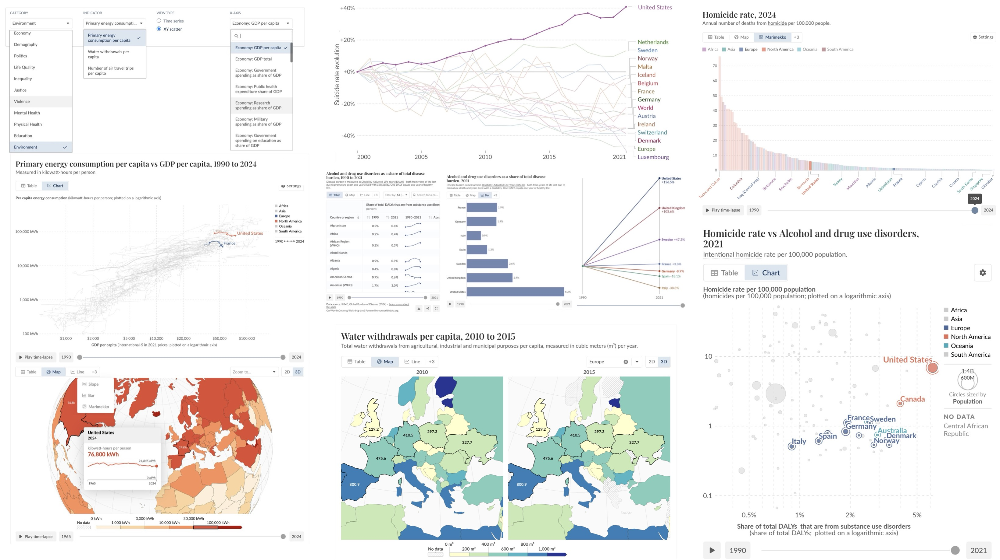

Modern Societies Observatory
A quantitative, multidimensional approach for analyzing contemporary societies evolution. This interactive platform aggregates nearly 100 validated indicators across 12 dimensions of society, enabling the exploration of over 10,000 potential correlations through dynamic visualizations that evolve over time.

Human sciences essay
Ongoing interdisciplinary research combining quantitative data analysis and qualitative
observations to examine social dynamics in the US and more generally in other Western societies.
Publication forthcoming
Astrophotography